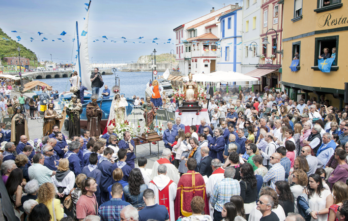
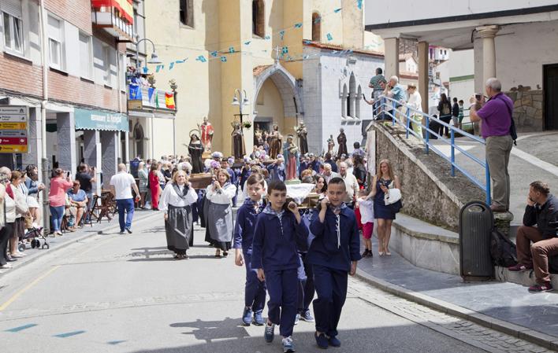
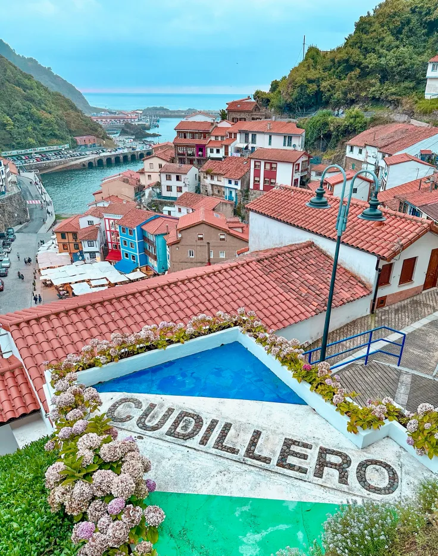
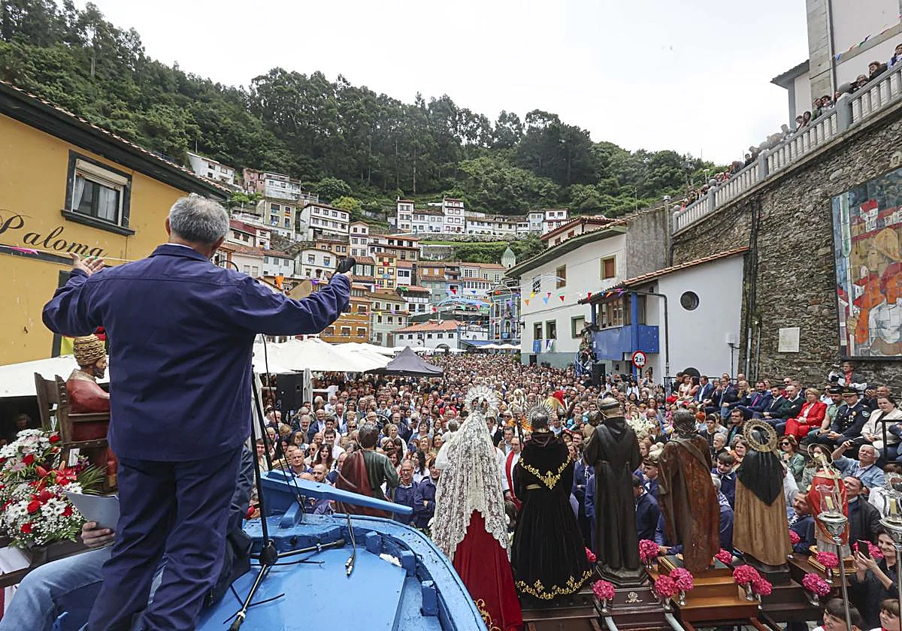
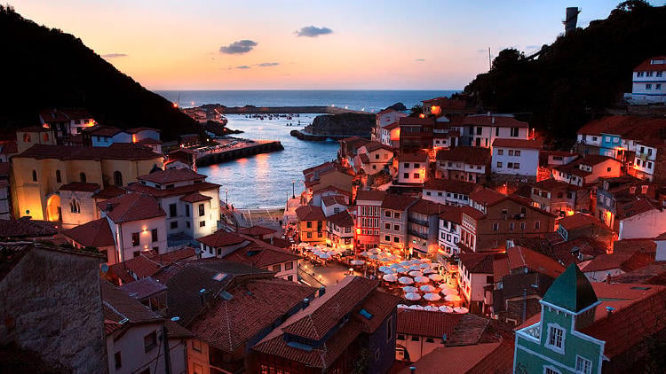
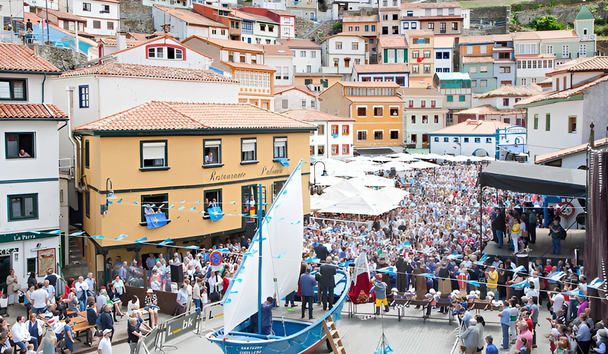

L'Amuravela en imágenes




.jpg)
La lengua, la identidad y el bautizo del pueblo marinero más especial de Asturias.
Quiero ser Pixueto La lengua pixuetaLos pixuetos son los habitantes naturales de Cudillero. El término proviene del dialecto local y hace referencia a la gente del pueblo, especialmente a los pescadores y sus familias que durante generaciones han mantenido viva la cultura marinera de esta villa asturiana.
Ser pixueto no es solo una cuestión de nacimiento: es una forma de vida, una actitud y un orgullo que se transmite de generación en generación a través de la lengua, las tradiciones y el amor por el mar.
El nombre de "Cudillero" tiene su propio origen curioso: proviene del término latino cuchillo, en referencia a la forma en punta del promontorio rocoso sobre el que se asienta el pueblo.

Cudillero aparece mencionado por primera vez en documentos del siglo X. Desde sus inicios fue un enclave pesquero clave en la costa asturiana, protegido por los acantilados y con acceso directo al mar.
Durante siglos la pesca fue el sustento principal del pueblo. Las familias pixuetas organizaban su vida entera alrededor del mar: las salidas a pescar, la espera en el puerto y las celebraciones al regreso de las embarcaciones.
Cudillero es considerado uno de los pueblos más bonitos de España. El turismo ha crecido enormemente gracias a su arquitectura típica, sus fiestas únicas y su gastronomía, sin perder su esencia marinera.
El pixueto es el dialecto propio de Cudillero, emparentado con el asturleonés medieval. Aquí tienes un pequeño diccionario para empezar.
| Pixueto | Castellano | Contexto |
|---|---|---|
| Pixueto/a | Habitante de Cudillero | Identidad del pueblo |
| L'Amuravela | El sermón festivo | Acto central de las fiestas |
| La marina | El puerto | Zona portuaria |
| Pixín | Rape (pescado) | Gastronomía local |
| El conceyu | El municipio | Administración local |
| Bollu preñau | Bollo relleno de chorizo | Gastronomía típica |
| Falar | Hablar | Verbo cotidiano |
| Neñu / Neña | Niño / Niña | Uso familiar |
| La mar | El mar | Entorno natural |
| Pescador | Pescador | Oficio tradicional |

L'Amuravela es el acto más esperado y singular de las fiestas de San Pedro. Se celebra cada 29 de junio en la Plaza de la Marina y consiste en un largo sermón humorístico en lengua pixueta que repasa, con ironía y humor, todos los hechos más importantes ocurridos en la villa durante el año.
La palabra amuravela hace referencia a la parte alta del mástil de un barco, desde donde se vigilaba el horizonte. Metafóricamente, el sermón "vigila" lo ocurrido en el pueblo y lo cuenta al mundo desde esa atalaya simbólica.
29 de junio
Día de San Pedro
Plaza de la Marina
12:00h · Entrada libre
¿Quieres hacerte oficial de Cudillero? El Bautizo Pixueto es tu oportunidad.
Acude a la Plaza de la Marina a partir de las 19:00h con ganas de formar parte de Cudillero.
Los anfitriones te otorgarán un nombre en dialecto pixueto durante la ceremonia.
Recibirás un diploma firmado que acredita que eres pixueto de honor para siempre.
Únete a la gran verbena de la noche como un pixueto más. Bienvenido a la familia.
El Bautizo Pixueto es completamente gratuito y abierto a cualquier visitante, sin importar su edad o lugar de origen.



